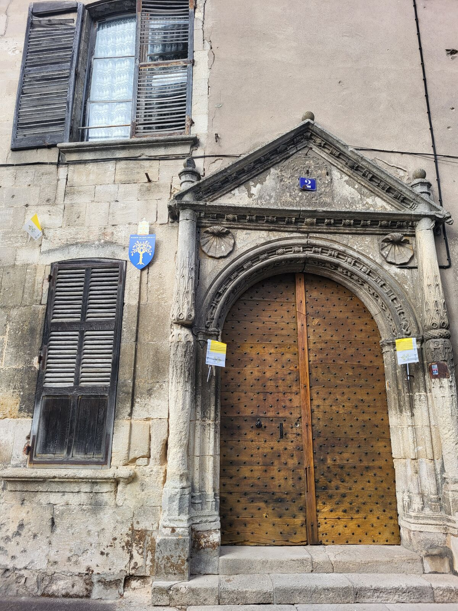
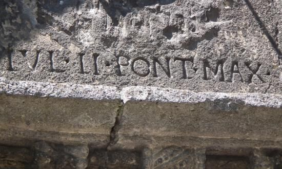
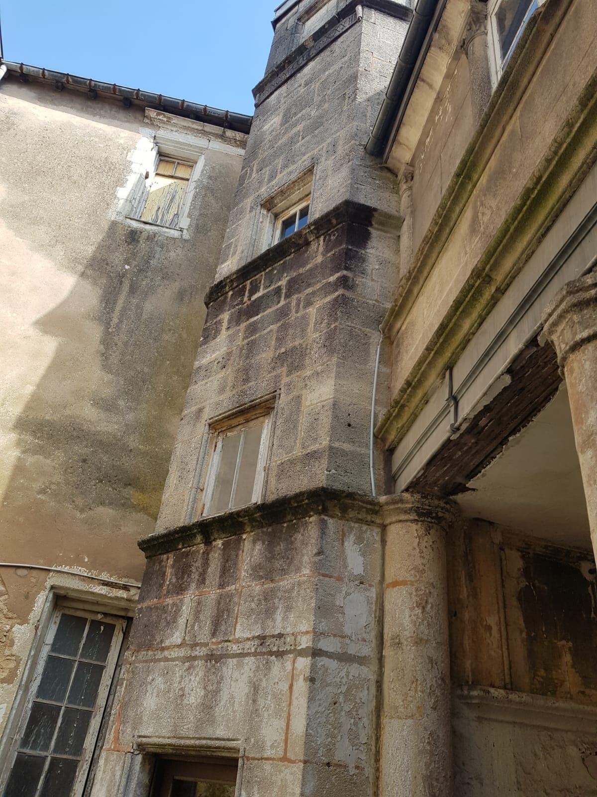

IVL·II·PONT·MAX
« Jules II, souverain pontife », inscription gravée au-dessus du portail.
Maison du pape Jules II dite de Rome, à Verdun
Derrière un portail Renaissance de 1533, une cour intérieure aux accents médiévaux garde cinq siècles d'histoire verdunoise. La maison est une propriété privée, restaurée et ouverte au public lors d'occasions choisies.

Une demeure médiévale et Renaissance
Au cœur de Verdun, sur la place de la Libération, la maison dite du pape Jules II réunit deux époques. Son portail sur rue, daté de 1533, affiche le vocabulaire de la Renaissance : pilastres, fronton et voussure sculptés. Passé la porte, la cour intérieure révèle une tour d'escalier, des colonnes et des galeries de pierre où se mêlent héritage médiéval et Renaissance.
Fermée au public pendant de très nombreuses années, la maison a retrouvé un propriétaire passionné en mars 2023. René Desbiolles s'attache depuis à la sauver, à en rechercher l'histoire dans les manuscrits et les archives, et à la faire découvrir.
« Je suis tombé amoureux et conquis par cette maison et par Verdun. »
René Desbiolles, propriétaire

Pourquoi « maison du pape » ?
Giuliano della Rovere, futur pape Jules II, a bien séjourné à Verdun à la fin du XVe siècle, alors qu'il était évêque. Pape de 1503 à 1513, il fit travailler Raphaël et Michel-Ange et lança la construction de la basilique Saint-Pierre de Rome.
Pourtant, la maison actuelle n'a été construite qu'en 1533, vingt ans après sa mort : Jules II n'y a sans doute jamais mis les pieds. L'inscription qui surplombe la porte principale rend hommage à son souvenir. La tradition rapporte aussi que l'adresse aurait été témoin du premier lieu de culte dédié à Marie-Madeleine en Occident, d'où l'ancien nom de place de la Magdelaine.
Les armes des della Rovere, un chêne d'or sur fond d'azur, sont aujourd'hui l'emblème de la maison.
Cinq siècles d'histoire
Les grandes étapes connues de la maison, telles que les retrace son propriétaire au fil de ses recherches.
-
À l'origine
Marie-Madeleine
Selon la tradition, l'emplacement aurait accueilli le premier lieu de culte dédié à Marie-Madeleine en Occident.
-
Fin du XVe s.
Le passage de Giuliano della Rovere
Le futur Jules II séjourne à Verdun alors qu'il est évêque. Son nom restera attaché à cette adresse.
-
1533
Le portail Renaissance
La maison actuelle est édifiée ; l'inscription IVL·II·PONT·MAX est gravée au-dessus de la porte.
-
1839
« Maison sur la place de la Magdelaine »
Un dessin à la plume représente la façade et son portail sous ce nom.
-
1926
Monument historique
La façade sur cour intérieure est inscrite aux monuments historiques par arrêté du 2 décembre.
-
2023
Un nouveau propriétaire
René Desbiolles acquiert la maison en mars. La même année, elle est retenue par la Mission Patrimoine portée par Stéphane Bern.
-
2025–2026
La toiture restaurée
De mai 2025 à avril 2026, la toiture est entièrement reprise sous le regard des Architectes des Bâtiments de France.
-
Sept. 2026
Portes ouvertes
Pour les Journées européennes du patrimoine, la maison accueille le public pour des visites guidées de la cour.
Sauver la maison avant de la raconter
À son arrivée, la maison souffrait de nombreuses infiltrations causées par une toiture que le temps n'avait pas ménagée. Le monument étant protégé depuis 1926, le chantier devait être très encadré et ne pouvait se faire sans de nombreuses démarches.
En 2023, la maison est retenue parmi les projets de la Mission Patrimoine. Le Loto du patrimoine permet de financer la reprise de la quasi-totalité du toit, une couverture de tuiles romaines qui protège quatre maisons. Les travaux ont commencé en mai 2025 et se sont achevés en avril 2026.
Ce n'est que la première étape d'une rénovation longue et coûteuse. Pour l'instant, seule la cour intérieure se visite.

Galerie
La cour, les archives et la vie de la maison. Touchez une image pour l'agrandir.
Visiter la maison
La maison est une propriété privée : elle ne se visite pas librement. Seule la cour intérieure est ouverte, lors d'ouvertures annoncées comme les Journées européennes du patrimoine.
Pour une visite de groupe, une association, un établissement scolaire, un tournage ou un article, écrivez au propriétaire en précisant vos dates et le nombre de personnes.
Merci de respecter la tranquillité des lieux en dehors des ouvertures.
S'y rendre
2 place de la Libération
55100 Verdun
Au cœur de Verdun, dans la Meuse. La ville est à environ 46 km de Bar-le-Duc.
Ouvrir le planÉcrire au propriétaire
Demande de visite, question sur l'histoire de la maison, archives ou documents à partager, presse : votre message arrive directement chez René Desbiolles.